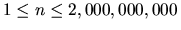

| Problem C: Selfdescribing Sequence |
The input may contain multiple test cases. Each test case occupies a separate line and contains an integer n ( ). The input terminates with a test case containing a value 0 for n and this case must not be processed.
For each test case in the input output the value of f(n) on a separate line.
100 9999 123456 1000000000 0
21 356 1684 438744